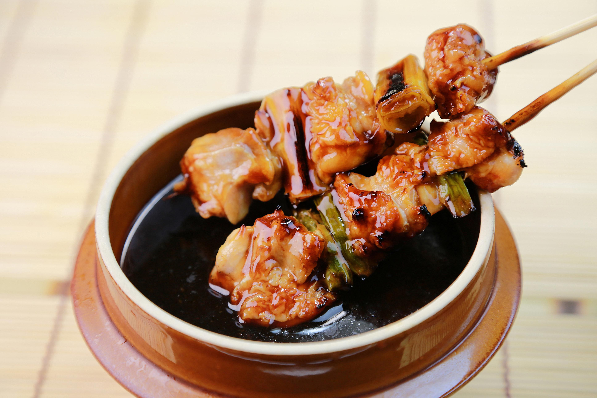

Chicken yakitori is an easy Japanese dish to make at home. Serve with white rice and sake for an easy but special meal!
Soak 10 wooden skewers in cold water for 15 minutes.
Thread chicken pieces onto the soaked skewers, alternating with scallions.
Combine sake, soy sauce, mirin, and sugar in a small saucepan and bring to a boil. Reduce heat and simmer for 5 minutes. Reserve 1/2 of the sauce for dipping.
Heat a grill pan over high heat and lightly brush with vegetable oil. Add skewers and cook until chicken is no longer pink in the center, basting frequently with 1/2 of the sauce, 7 to 10 minutes per side.